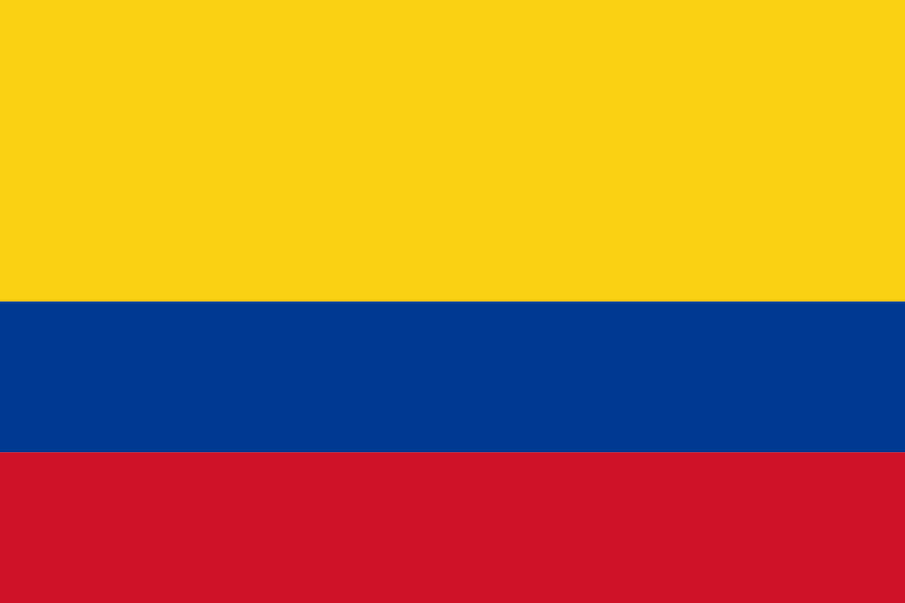

Luis Miguel Chaves Espinosa
About me
My name is Luis Chaves. I'm from Colombia and I'm currently studying Software Development at BYU-Idaho while working as a Customer Technical Support Specialist. I really like listening to music and practicing sports.

Medellin, Colombia

Special District of Science, Technology and Innovation of Medellín (Spanish: Distrito Especial de Ciencia, Tecnología e Innovación de Medellín), is the second-largest city in Colombia after Bogotá, and the capital of the department of Antioquia. It is located in the Aburrá Valley, a central region of the Andes Mountains, in northwestern South America.